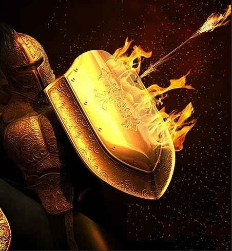

A JUSTIÇA PELA FÉ (Introdução)
Quando o tema é salvação, surgem muitas perguntas inquietantes em nossa mente. Desejamos que Deus nos responda de forma muito simples e compreensível. Neste primeiro artigo, faremos uma introdução, uma curta reflexão baseada na experiência de nosso irmão Cameron Schofield. Espero que juntos possamos descobrir qual é a nossa grande necessidade.
É muito provável que nunca tenha ouvido estas coisas antes. Mas, por favor, não tenha medo. São verdades da Palavra de Deus que irão prepará-lo para a segunda vinda de Cristo e permitir que você sobreviva a todas as experiências que devemos enfrentar antes desse tempo. Satanás não quer que estejamos prontos e por isso tem trabalhado muito para manter estas verdades maravilhosas longe de nós. Ele quer que permaneçamos em nosso estado mental confuso em relação à nossa salvação ou em nossa condição laodiceana - pensando que estamos bem quando definitivamente não estamos.
Muitos cristãos têm medo do futuro. Eles temem o tempo de angústia que se aproxima rapidamente. Eles temem o julgamento e a segunda vinda de Cristo, quando Ele recompensará a cada homem de acordo com as suas próprias obras. Eles olham para suas vidas, a fraqueza de sua fé e o grande padrão de moralidade que Deus deu a todos os homens e tremem em sua confusão sobre como podem ser salvos.
Muitos ministérios parecem querer pregar tudo o mais, menos a mensagem de salvação. Eles têm como certo que as pessoas sabem como ser salvas e então se concentram em assuntos como profecia, doutrina, história da igreja e saúde. Mas descobri que eles estão cometendo um grande erro… A maioria das pessoas NÃO sabe como ser salva.
Assuntos como profecia, doutrina e saúde, têm seu lugar, mas não são o Evangelho da Salvação e podem ser uma distração das coisas mais importantes.
A profecia, por exemplo, mostra-nos onde estamos na história da Terra, que o fim está muito próximo e que precisamos nos preparar, MAS, não diz COMO nos preparar para isso. Falei com muitas pessoas que ouviram a pregação de profecias por muitos anos e os achei absolutamente apavorados com o futuro porque não sabem como estar preparados para o que sabem que está por vir.
Tenho a forte convicção de que é a hora de decidirmos corretamente nossas prioridades. É hora de dar respostas às perguntas que todos nós precisamos responder, que nossos corações clamam. E é por isso que estamos postando essa série de artigos. Queremos compartilhar com vocês as respostas que encontramos
Antes de ler cada artigo, pedimos que faça uma pequena oração no início e também quando terminar. Você só precisa orar algumas palavras, apenas pedir a Deus para ser Seu Professor, e então agradecê-Lo por ouvi-lo e respondê-lo. Sempre deixe ser uma oração que vem do seu coração.
Continua…
👉 Precisamos saber como somos salvos. Peça a Deus para ser seu Professor! Cada um deve buscar por si mesmo se estas coisas são, realmente, assim.
- Essencialista